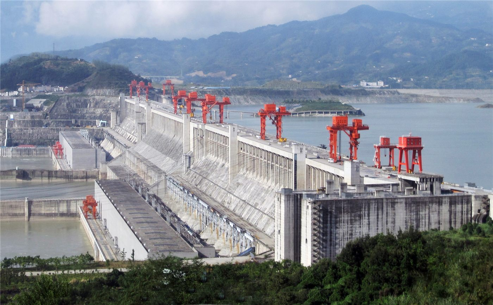

황허 ‘샤오랑디’ 댐 청사·배사 작업… 다층적 댐 안전 관리
중국 황허의 샤오랑디(小浪底) 댐이 퇴적된 토사를 씻어 내리는 청사(淸淤)·배사 작업을 진행했다. 여러 수단을 동원해 댐의 안전과 저수 기능을 지키려는 정기적 관리의 일환이다.
정가호 기자 · 2026.06.27
橋중국

황허 샤오랑디 댐에서 퇴적 토사를 배출하는 ‘청사·탕사(淸淤蕩沙)’ 작업이 이뤄졌다고 인민망이 전했다. 댐 안전을 지키기 위한 다층적 관리의 한 장면이다.
광고 문의 · 300×250댐에는 시간이 지나며 흙과 모래가 쌓여 저수 용량을 줄이고 구조에 부담을 준다. 정해진 시기에 물과 함께 토사를 흘려보내는 배사 작업은 댐의 수명과 기능을 유지하는 핵심 관리다.
황허는 토사 함량이 높기로 유명한 강이어서, 퇴적 관리가 특히 중요하다. 적절한 배사는 하류의 하천 환경과 홍수 대비에도 영향을 준다.
華橋時報는 인프라 관리 소식을 통해 ‘보이지 않는 유지의 노력’을 전한다. 거대한 댐 하나가 안전하게 작동하기 위해 어떤 작업이 반복되는지를 사실대로 소개한다.
수리·방재 기술은 기후 변화 시대에 모든 사회의 공통 과제다. 화인 독자에게도 흥미로운 기술·환경 정보가 될 수 있다.